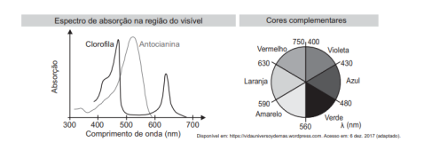

No outono, as folhas das árvores mudam de cor porque a produção de clorofila diminui.
Outros pigmentos, como carotenoides e antocianinas, tornam-se dominantes, absorvendo
diferentes faixas do espectro visível.

De acordo com o espectro de absorção, em qual faixa do espectro visível os carotenoides
absorvem majoritariamente?
Solução (interativa)
1) Que cor o carotenoide reflete, tornando as folhas amareladas ou alaranjadas?
A cor percebida é a luz refletida, ou seja, a que não foi absorvida pelo pigmento.
2) Em que região do espectro visível está a luz complementar à cor amarela?
As cores complementares se situam em lados opostos do espectro visível.
3) Portanto, entre quais faixas de cor os carotenoides absorvem mais intensamente?
Pigmentos alaranjados absorvem comprimentos de onda curtos, correspondentes ao violeta e azul.